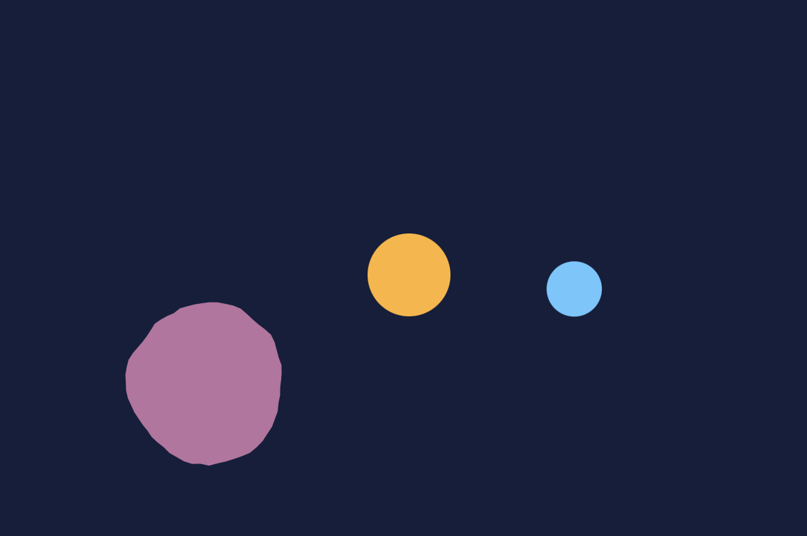

Iteration 1: I started with a simple circular motion using sine and cosine to test smooth periodic movement.
Iteration 2: Added a second shape that moves randomly after a fixed time interval using the millis() function.
Iteration 3: Introduced Perlin noise to distort the shape’s edges, creating an organic, breathing blob effect.
Iteration 4: Adjusted timing and desynchronization to make the two movements more dynamic and less predictable.
Iteration 5: Fine-tuned color palette and motion rhythm to make the animation more harmonious.
Iteration 6: Final version with smooth transitions, balanced motion rhythm, and synchronized aesthetic.